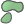

Docs for ‘QGIS testing’. Visit http://docs.qgis.org/2.14 for QGIS 2.14 docs and translations.
fTools Plugin¶
The goal of the fTools Python plugin is to provide a one-stop resource for many common vector-based GIS tasks, without the need for additional software, libraries, or complex work-arounds. It provides a growing suite of spatial data management and analysis functions that are both fast and functional.
fTools is now automatically installed and enabled in new versions of QGIS, and as with all plugins, it can be disabled and enabled using the Plugin Manager (see The Plugins Dialog). When enabled, the fTools plugin adds a Vector menu to QGIS, providing functions ranging from Analysis and Research Tools to Geometry and Geoprocessing Tools, as well as several useful Data Management Tools.
Analysis tools¶


Table Ftools 1: fTools Analysis tools
Research tools¶


Table Ftools 2: fTools Research tools
Geoprocessing tools¶


Table Ftools 3: fTools Geoprocessing tools
Geometry tools¶
| Icon | Tool | Purpose |
|---|---|---|
 |
Check geometry validity | Check polygons for intersections, closed holes, and fix node ordering. You can choose the engine used by the in the options dialog, digitizing tab Change the Validate geometries value. There is two engines: QGIS and GEOS which have pretty different behavior. Another tools exists which shows different result as well: Topology Checker plugin and ‘must not have invalid geometries’ rule. |
| Export/Add geometry columns | Add vector layer geometry info to point (XCOORD, YCOORD), line (LENGTH), or polygon (AREA, PERIMETER) layer. | |
 |
Polygon centroids | Calculate the true centroids for each polygon in an input polygon layer. |
 |
Delaunay triangulation | Calculate and output (as polygons) the Delaunay triangulation of an input point vector layer. |
| Voronoi polygons | Calculate Voronoi polygons of an input point vector layer. | |
| Simplify geometry | Generalize lines or polygons with a modified Douglas-Peucker algorithm. | |
| Densify geometry | Densify lines or polygons by adding vertices. | |
 |
Multipart to singleparts | Convert multipart features to multiple singlepart features. Creates simple polygons and lines. |
|  | Singleparts to multipart | Merge multiple features to a single multipart feature based on a unique ID field. |
 |
Polygons to lines | Convert polygons to lines, multipart polygons to multiple singlepart lines. |
|
Lines to polygons | Convert lines to polygons, multipart lines to multiple singlepart polygons. |
| Extract nodes | Extract nodes from line and polygon layers and output them as points. |
Table Ftools 4: fTools Geometry tools
Note
The Simplify geometry tool can be used to remove duplicate nodes in line and polygon geometries. Just set the Simplify tolerance parameter to 0 and this will do the trick.
Data management tools¶


{kind=link}
{kind=link}
{kind=link}
{kind=link}
{kind=link}
{kind=link}
{kind=link}
{kind=link}
{kind=link}
{kind=link}
{kind=link}
{kind=link}
{kind=link}
{kind=link}
{kind=link}
{kind=link}
{kind=link}
Table Ftools 5: fTools Data management tools